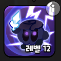

게임을 진행하는 주체로 게임 내에서 가장 중요하다고 볼 수 있다
쿠키는 현재 38개가 있으며 에픽이 18개 레어가 13개 커먼이 7개이다
쿠키를 얻을 수 있는 방법은 다이아를 주고 뽑거나 영혼석 20개를 모아서 얻는 방법 이 2가지이다
위의 사진처럼 1회는 300개 10회는 3000다이아가 든다
추천쿠키
이 추천 쿠키는 절대적인 것이 아님을 밝힘!!
에소프레소맛 쿠키
에소프레소는 현재 가장 탑급인 쿠키라고 해도 과언이 아니다 pvp 랭킹을 봐도 모두 에소프레소를 가지고 있다
그만큼 무자본 고자본 상관 없이 모든 유저들이 다 사용하는 국민쿠키이다
없으면 꼭 뽑도록 하자
감초맛 쿠키

딜도 좋고 소환수를 소환하기 떄문에 탱커의 포지션에서 조금의 도움을 줄 수 있다 또한 방어력 증가라는 버프를 주기 때문에 되게 좋은 쿠키로 평가 받고 있다